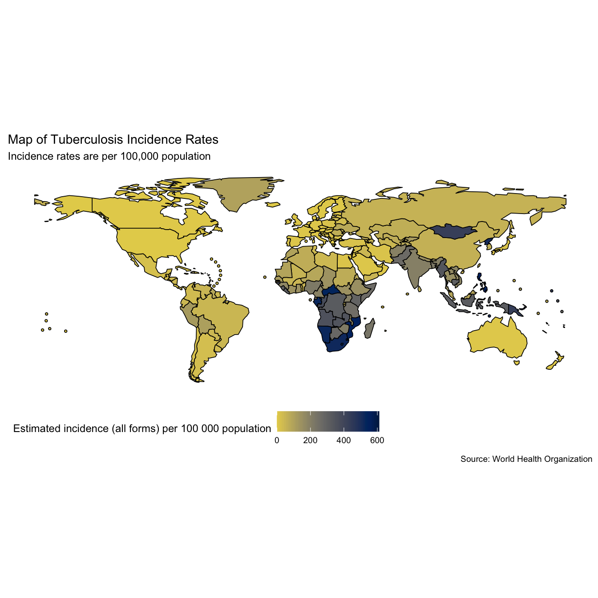
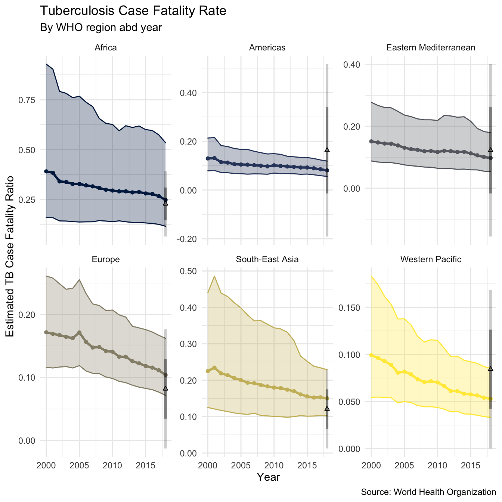
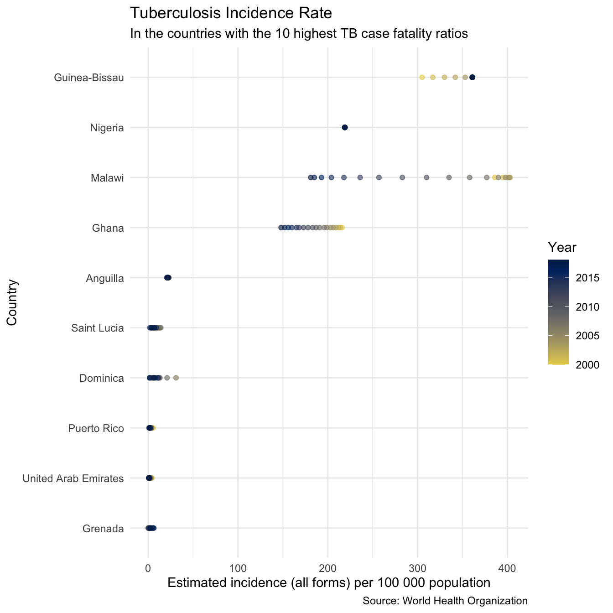

vignettes/case_fatality_rate.Rmd
case_fatality_rate.RmdThis case study investigates World Health Organization (WHO) estimates of the case fatality ratio for Tuberculosis (TB). It then estimates case fatality rates using a simple approximation and compares the results to the WHO estimates. It was adapted from this blog post.
It is estimated that in 2016 there was more than 10 million cases of active TB, with 1.3 million deaths (source). This makes TB the leading cause of death from an infectious disease. Despite the high numbers of cases globally, and high levels of mortality, TB is often considered a historic disease in developed countries. However, in recent years previously declining trends have flattened out and there is increasing concern surrounding multi-drug resistant TB, which has a greatly reduced the rate of successful treatment (source).
A key component of TB control is reducing the case fatality rate from active TB, this post explores WHO estimates for the TB case fatality rate in the most recent year of data and then estimates the case fatality rates in previous years. The first step is to download and install the required packages.
Now we use getTBinR to download the TB burden data and its accompanying data dictionary.
tb_burden <- get_tb_burden() dict <- get_data_dict() tb_burden #> # A tibble: 4,031 x 71 #> country iso2 iso3 iso_numeric g_whoregion year e_pop_num e_inc_100k #> <chr> <chr> <chr> <int> <chr> <int> <int> <dbl> #> 1 Afghan… AF AFG 4 Eastern Me… 2000 20779953 190 #> 2 Afghan… AF AFG 4 Eastern Me… 2001 21606988 189 #> 3 Afghan… AF AFG 4 Eastern Me… 2002 22600770 189 #> 4 Afghan… AF AFG 4 Eastern Me… 2003 23680871 189 #> 5 Afghan… AF AFG 4 Eastern Me… 2004 24726684 189 #> 6 Afghan… AF AFG 4 Eastern Me… 2005 25654277 189 #> 7 Afghan… AF AFG 4 Eastern Me… 2006 26433049 189 #> 8 Afghan… AF AFG 4 Eastern Me… 2007 27100536 189 #> 9 Afghan… AF AFG 4 Eastern Me… 2008 27722276 189 #> 10 Afghan… AF AFG 4 Eastern Me… 2009 28394813 189 #> # … with 4,021 more rows, and 63 more variables: e_inc_100k_lo <dbl>, #> # e_inc_100k_hi <dbl>, e_inc_num <int>, e_inc_num_lo <int>, #> # e_inc_num_hi <int>, e_tbhiv_prct <dbl>, e_tbhiv_prct_lo <dbl>, #> # e_tbhiv_prct_hi <dbl>, e_inc_tbhiv_100k <dbl>, e_inc_tbhiv_100k_lo <dbl>, #> # e_inc_tbhiv_100k_hi <dbl>, e_inc_tbhiv_num <int>, e_inc_tbhiv_num_lo <int>, #> # e_inc_tbhiv_num_hi <int>, e_mort_exc_tbhiv_100k <dbl>, #> # e_mort_exc_tbhiv_100k_lo <dbl>, e_mort_exc_tbhiv_100k_hi <dbl>, #> # e_mort_exc_tbhiv_num <int>, e_mort_exc_tbhiv_num_lo <int>, #> # e_mort_exc_tbhiv_num_hi <int>, e_mort_tbhiv_100k <dbl>, #> # e_mort_tbhiv_100k_lo <dbl>, e_mort_tbhiv_100k_hi <dbl>, #> # e_mort_tbhiv_num <int>, e_mort_tbhiv_num_lo <int>, #> # e_mort_tbhiv_num_hi <int>, e_mort_100k <dbl>, e_mort_100k_lo <dbl>, #> # e_mort_100k_hi <dbl>, e_mort_num <int>, e_mort_num_lo <int>, #> # e_mort_num_hi <int>, cfr <dbl>, cfr_lo <dbl>, cfr_hi <dbl>, cfr_pct <int>, #> # cfr_pct_lo <int>, cfr_pct_hi <int>, c_newinc_100k <dbl>, c_cdr <dbl>, #> # c_cdr_lo <dbl>, c_cdr_hi <dbl>, source_rr_new <chr>, #> # source_drs_coverage_new <chr>, source_drs_year_new <int>, #> # e_rr_pct_new <dbl>, e_rr_pct_new_lo <dbl>, e_rr_pct_new_hi <dbl>, #> # e_mdr_pct_rr_new <int>, source_rr_ret <chr>, source_drs_coverage_ret <chr>, #> # source_drs_year_ret <int>, e_rr_pct_ret <dbl>, e_rr_pct_ret_lo <dbl>, #> # e_rr_pct_ret_hi <dbl>, e_mdr_pct_rr_ret <int>, e_inc_rr_num <int>, #> # e_inc_rr_num_lo <int>, e_inc_rr_num_hi <int>, e_mdr_pct_rr <dbl>, #> # e_rr_in_notified_labconf_pulm <int>, #> # e_rr_in_notified_labconf_pulm_lo <int>, #> # e_rr_in_notified_labconf_pulm_hi <int> dict #> # A tibble: 495 x 4 #> variable_name dataset code_list definition #> <chr> <chr> <chr> <chr> #> 1 budget_cpp_dstb Budget "" Average cost of drugs budgeted per patient… #> 2 budget_cpp_mdr Budget "" Average cost of drugs budgeted per patient… #> 3 budget_cpp_xdr Budget "" Average cost of drugs budgeted per patient… #> 4 budget_fld Budget "" Budget required for drugs to treat drug-su… #> 5 budget_lab Budget "" Budget required for laboratory infrastruct… #> 6 budget_mdrmgt Budget "" Budget required for programme costs to tre… #> 7 budget_orsrvy Budget "" Budget required for operational research a… #> 8 budget_oth Budget "" Budget required for all other budget line … #> 9 budget_patsup Budget "" Budget required for patient support (US Do… #> 10 budget_prog Budget "" Budget required for programme costs to tre… #> # … with 485 more rows
We want to explore the case fatality rate (cfr), lets first look at the WHO definition.
search_data_dict("cfr") %>% knitr::kable()
| variable_name | dataset | code_list | definition |
|---|---|---|---|
| cfr | Estimates | Estimated TB case fatality ratio |
Maps can be a useful first visualisation for summarising spatial data, although they can also be misleading for more complex comparisons. Lets look at global TB incidence rates (per 100,000 population) in the most recent year of data (when written 2016), and the WHO estimate of the case fatality ratio in the same year.
# Map TB incidence rates mp1 <- map_tb_burden( viridis_palette = "cividis", viridis_direction = -1 ) + labs(title = "Map of Tuberculosis Incidence Rates", subtitle = "Incidence rates are per 100,000 population") mp1

# Map TB case fatality ratio -2016 mp2 <- map_tb_burden(metric = "cfr", viridis_palette = "cividis", viridis_direction = -1) + labs(title = "Map of Tuberculosis Case Fatality Ratio", subtitle = "Case fatality rate estimated by the WHO") mp2
Whilst quantitative insights are hard to glean from the above maps we can see that incidence rates appear to be highest in Africa and Asia (interpretation based on data from 2016). It also looks like the case fatality ratios are highest in these regions as well.
The WHO have only provided estimates for the case fatality ratio from the most recent year of data, estimating the case fatality ratio for other years will allow trends over time to be explored. We do this by first summarising TB incidence rates, and mortality rates by region. This allows insights into the general global picture to be more easily extracted (Note: This functionality has now been implemented into the getTBinR using getTBinR::plot_tb_burden_summary(metric_label = "e_inc_100k", legend = "none", facet = "Area", scales = "free_y", compare_to_world = FALSE) - can be customised to plot all metrics see ?getTBinR::plot_tb_burden_summary for details). The first step is to write a function to summarise rates on regional levels, we do this using dplyr::summarise_at.
## Make function to summarise rates in a given region rate_region <- function(df = NULL, metric = NULL) { metric_vars <- c(metric, paste0(metric, "_lo"), paste0(metric, "_hi")) df <- df %>% group_by(year, g_whoregion) %>% summarise_at(.vars = c(metric_vars, "e_pop_num"), .funs = funs(sum(as.numeric(.), na.rm = T))) %>% ungroup() %>% mutate_at(.vars = metric_vars, .funs = funs(. / e_pop_num * 1e5)) }
We then write a reusable plotting function to visualise this data (making use of aes_string).
## Plotting function for rates plot_rate_region <- function(df = NULL, metric = NULL, title = NULL, subtitle = NULL, y_lab = NULL, scales = NULL) { metric_vars <- c(metric, paste0(metric, "_lo"), paste0(metric, "_hi")) df %>% ggplot(aes_string(x = "year", y = metric, col = "g_whoregion", fill = "g_whoregion")) + geom_point(size = 1.3) + geom_ribbon(aes_string(ymin = metric_vars[2], ymax = metric_vars[3]), alpha = 0.3) + geom_line(size = 1.1) + scale_y_continuous(labels = comma) + scale_colour_viridis(discrete = TRUE, option = "E") + scale_fill_viridis(discrete = TRUE, option = "E") + labs(title = title, subtitle = subtitle, x = "Year", y = y_lab) + theme_minimal() + theme(legend.position = "none") + facet_wrap(~g_whoregion, scales = scales) }
We can now quickly plot TB incidence rates by region, as well as mortality rates by region.
plot_inc_region <- tb_burden %>% rate_region(metric = "e_inc_num") %>% plot_rate_region(metric = "e_inc_num", title = "Tuberculosis Incidence Rates", subtitle = "By region and year", scales = "free_y", y_lab = "Tuberculosis Incidence Rates (per 100,000 population)") #> Warning: `funs()` is deprecated as of dplyr 0.8.0. #> Please use a list of either functions or lambdas: #> #> # Simple named list: #> list(mean = mean, median = median) #> #> # Auto named with `tibble::lst()`: #> tibble::lst(mean, median) #> #> # Using lambdas #> list(~ mean(., trim = .2), ~ median(., na.rm = TRUE)) #> This warning is displayed once every 8 hours. #> Call `lifecycle::last_warnings()` to see where this warning was generated. plot_inc_region + labs(caption = "Source: World Health Organization")
plot_mort_region <- tb_burden %>% rate_region(metric = "e_mort_num") %>% plot_rate_region(metric = "e_mort_num", title = "Tuberculosis Mortality Rates", subtitle = "By region and year", scales = "free_y", y_lab = "Tuberculosis Mortality Rates (per 100,000 population)") plot_mort_region + labs(caption = "Source: World Health Organization")
This gives an encouraging picture with both incidence rates and mortality rates declining in all regions (as of 2016). As we observed from the maps above incidence rates (and mortality rates) are highest in Africa, and South-East Asia. We also see that the rate of decline in incidence rates varies across regions, with South-East Asia and the Eastern Mediterranean experiencing the slowest decreases. Interestingly it also appears that mortality rates in some areas are decreasing more quickly than incidence rates, this is most notable for Europe. As mortality rates and incidence rates are highly correlated to explore in more depth we need to estimate the case fatality ratio for all years in the data.
To validate our estimates we first extract the regional estimates for the case fatality ratio based on the WHO estimates, by taking the mean (and standard deviation) of case fatality ratios by country in each region. This gives an estimate for case fatality rates at the regional level as well as the between country variation.
## Summarise Case fatality rate by region - only availble for most recent year region_case_fat <- tb_burden %>% filter(year %in% max(year)) %>% group_by(year, g_whoregion) %>% summarise(mean = mean(cfr, na.rm = TRUE), sd = sd(cfr, na.rm = TRUE)) %>% mutate(ll = mean - sd, lll = mean - 2 * sd, hh = mean + sd, hhh = mean + 2 * sd) #> `summarise()` regrouping output by 'year' (override with `.groups` argument) region_case_fat #> # A tibble: 6 x 8 #> # Groups: year [1] #> year g_whoregion mean sd ll lll hh hhh #> <int> <chr> <dbl> <dbl> <dbl> <dbl> <dbl> <dbl> #> 1 2018 Africa 0.228 0.0817 0.147 0.0648 0.310 0.392 #> 2 2018 Americas 0.163 0.177 -0.0140 -0.191 0.340 0.516 #> 3 2018 Eastern Mediterranean 0.122 0.139 -0.0169 -0.156 0.261 0.401 #> 4 2018 Europe 0.0819 0.0473 0.0346 -0.0127 0.129 0.177 #> 5 2018 South-East Asia 0.121 0.0541 0.0668 0.0127 0.175 0.229 #> 6 2018 Western Pacific 0.0842 0.0421 0.0422 0.000125 0.126 0.168
We then estimate the regional case fatality ratio by taking the regional mortality rate and dividing it by the regional incidence rate for each year (Note: Again this is now possible using plot_tb_burden_summary - by changing the metric and denom arguments). We also do this for the high and low mortality rate estimates (using the lowest estimate for TB mortality and the highest estimate for incidence rates to get the lower bound, and vice versa for the high bound). This gives,
region_case_fatality <- tb_burden %>% rate_region(metric = "e_inc_num") %>% left_join(tb_burden %>% rate_region(metric = "e_mort_num")) %>% mutate(case_fat_rate = e_mort_num / e_inc_num, case_fat_rate_lo = e_mort_num_lo / e_inc_num_hi, case_fat_rate_hi = e_mort_num_hi / e_inc_num_lo) #> Joining, by = c("year", "g_whoregion", "e_pop_num") region_case_fatality #> # A tibble: 114 x 12 #> year g_whoregion e_inc_num e_inc_num_lo e_inc_num_hi e_pop_num e_mort_num #> <int> <chr> <dbl> <dbl> <dbl> <dbl> <dbl> #> 1 2000 Africa 329. 209. 477. 6.54e8 129. #> 2 2000 Americas 36.2 28.5 44.5 8.33e8 4.69 #> 3 2000 Eastern Me… 128. 88.4 176. 4.50e8 19.4 #> 4 2000 Europe 51.7 37.5 68.5 8.56e8 8.87 #> 5 2000 South-East… 299. 183. 449. 1.57e9 67.2 #> 6 2000 Western Pa… 135. 92.5 186. 1.71e9 13.4 #> 7 2001 Africa 335. 213. 482. 6.71e8 129. #> 8 2001 Americas 34.3 27.3 42.4 8.43e8 4.50 #> 9 2001 Eastern Me… 128. 88.0 176. 4.60e8 18.9 #> 10 2001 Europe 51.2 37.1 67.5 8.58e8 8.66 #> # … with 104 more rows, and 5 more variables: e_mort_num_lo <dbl>, #> # e_mort_num_hi <dbl>, case_fat_rate <dbl>, case_fat_rate_lo <dbl>, #> # case_fat_rate_hi <dbl>
We can then plot this using the plot_rate_region function outlined above, combined with addition layers to compare our estimate to that produced by the WHO.
plot_region_case_fatality <- region_case_fatality %>% plot_rate_region(metric = "case_fat_rate", title = "Tuberculosis Case Fatality Rate", subtitle = "By WHO region abd year", scales = "free_y", y_lab = "Estimated TB Case Fatality Ratio") + labs(caption = "Case fatality ratio estimated by taking the ratio of TB mortality rates and TB incidence rates each year in all years. For the most recent year the mean regional case fatality ratio estimated by the WHO is also shown (along with one and two standard deviations)") + geom_point(data = region_case_fat, aes(y = mean, x = year, fill = g_whoregion), shape = 2, size = 1.3, col = "black") + geom_linerange(data = region_case_fat, aes(ymin = ll, ymax = hh, y = NULL), alpha = 0.4, size = 1.2, col = "black") + geom_linerange(data = region_case_fat, aes(ymin = lll, ymax = hhh, y = NULL), alpha = 0.2, size = 1.2, col = "black") plot_region_case_fatality + labs(caption = "Source: World Health Organization")

We see that the estimate using mortality rates / incidence rates compares well to the estimate published for the most recent year by the WHO, although there is substantial within country variation. For all regions our estimate has substantial uncertainty. The plot suggests that the TB case fatality ratio is decreasing over time in all regions (as of 2016), although this reduction appears to be very minimal in some regions (such as the Americas, Africa, and the Eastern Mediterranean). It is likely that this trend does not hold across all countries, but this is beyond the scope of this post (watch this space).
As a first look at the case fatality ratios in individual countries we can quickly pull out the 10 countries with the highest case fatality ratio in the most recent year of data. These are,
highest_case_fataltity_countries <- tb_burden %>% filter(year %in% max(year)) %>% arrange(desc(cfr)) %>% slice(1:10) %>% pull(country) highest_case_fataltity_countries #> [1] "Saint Lucia" "Grenada" "United Arab Emirates" #> [4] "Dominica" "Anguilla" "Puerto Rico" #> [7] "Guinea-Bissau" "Ghana" "Nigeria" #> [10] "Malawi"
We can then plot the TB case fatality ratio in these countries, as well as the TB incidence rates over time.
## Plot overview of cases fatality ratios plot_high_cfr <- plot_tb_burden_overview(metric = "cfr", countries = highest_case_fataltity_countries, viridis_palette = "cividis", viridis_direction = -1, viridis_end = 0.9) + theme_minimal() + theme(legend.position = "none") + labs(title = "Tuberculosis Case Fatality Ratio - 2016", subtitle = "For the countries with the 10 highest ratios") plot_high_cfr
plot_inc_high_cfr <- plot_tb_burden_overview(countries = highest_case_fataltity_countries, viridis_palette = "cividis", viridis_direction = -1, viridis_end = 0.9) + theme(legend.position = "none") + theme_minimal() + theme(legend.position = "right") + labs(title = "Tuberculosis Incidence Rate", subtitle = "In the countries with the 10 highest TB case fatality ratios") plot_inc_high_cfr

We see that for some countries on this list (i.e Anguilla, the United Arab Emirates, and Dominica) the high case fatality ratio estimates are likely to be based on a very low sample size and therefore may not be trustworthy. Worryingly however for several countries (Lesotho, Tanzania, Guinea-Bissau, and Ghana, and Nigeria) with extremely high case fatality ratios incidence rates are also very high, which will correspond to very high mortality rates. These countries are all in Africa, which as a region also had the highest incidence rates and the highest case fatality ratio. It is clear from these plots that Africa, and these countries in particular should be a particular focus of TB control efforts if TB mortality rates are to be reduced more quickly.
The WHO TB data contains many more variables not mentioned in this post and getTBinR contains additional features, see the site for getTBinR for details. See my gists for code snippets to get you started in exploring the data further. Package feature requests are welcome, preferably by filing a GitHub issue, as are suggestions for additional data sources to include.